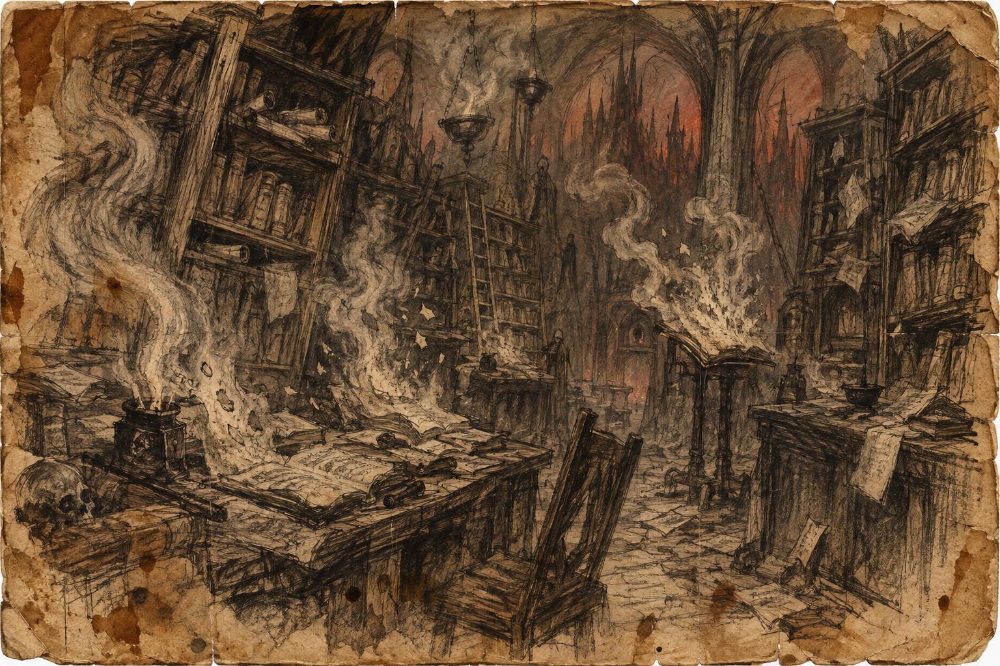

The reading rooms
Low vaults trap smoke above desks worn hollow by patient hands. Shelves hold books with scorched spines and blank interiors. A draft appears only when a reader asks the question that once caused its destruction.
Forbidden drafts and erased gospels appear in ash, readable for one breath before the page goes clean.

Low vaults trap smoke above desks worn hollow by patient hands. Shelves hold books with scorched spines and blank interiors. A draft appears only when a reader asks the question that once caused its destruction.
The collection preserves revisions: a mercy struck out, an exception removed, a witness made anonymous. The letters darken as they are read and scatter at the end of a breath. Copyists work in pairs, one reading while the other tries to remember without improving the testimony.
No flame is permitted inside. Nothing may be quoted as the final word. Readers who arrive to prove themselves right find only their own handwriting; those prepared to be corrected sometimes leave with a single line they cannot forget.